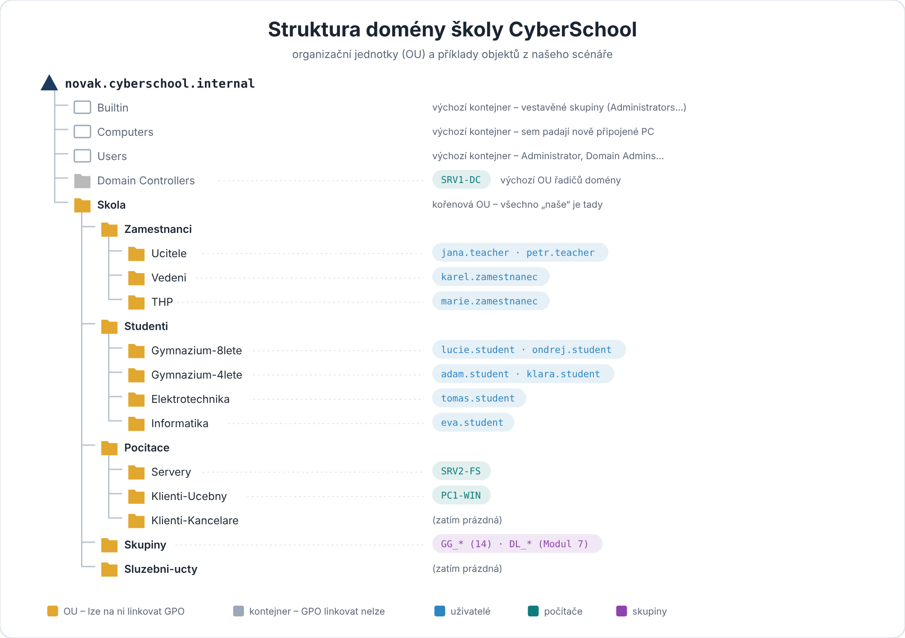

[Co má být na konci modulu a jak to vypadá?]
Přibližný potřebný čas: 6 vyučovacích hodin | Verze: 2026-11-15
Kontext (proč to děláme)
Máme doménu, DHCP i DNS, ale zatím jen jediný účet Administrator a počítače jsou mimo doménu. V tomhle modulu postavíme skutečnou adresářovou strukturu pro školu CyberSchool (organizační jednotky, bezpečnostní skupiny podle modelu AGDLP, reálné účty učitelů, vedení, THP a šesti žáků všech čtyř oborů, provizorní domovské složky a kočovné profily) a připojíme do domény první klientskou stanici PC1-WIN.
200 a příjmení novak. Vy všude dosaďte číslo svého pracoviště (192.168.N.x, kde N je číslo pracoviště) a své příjmení bez diakritiky (prijmeni.cyberschool.internal).
Předpoklad: hotový Modul 00, Modul 01, Modul 02 a Modul 03
Server SRV1-DC je řadičem domény lesa <prijmeni>.cyberschool.internal se statickou IP adresou 192.168.N.10/24 na interním rozhraní Ethernet1, funkční rolí DNS Server (dopředná i reverzní zóna) a DHCP Server. Stanice PC1-WIN má Windows 11 a na Ethernet1 používá jako DNS server adresu 192.168.N.10.
Cílový stav: Struktura Active Directory, skupiny, účty a klient

Struktura organizačních jednotek (OU)
Pod kořenem domény existuje čistá hierarchie 16 OU pod Skola (plus výchozí Domain Controllers = 17 OU celkem). Všechny OU mají zapnutou ochranu proti smazání (ProtectedFromAccidentalDeletion = True):
<prijmeni>.cyberschool.internal
└── Skola
├── Zamestnanci
│ ├── Ucitele
│ ├── Vedeni
│ └── THP
├── Studenti
│ ├── Gymnazium-8lete
│ ├── Gymnazium-4lete
│ ├── Elektrotechnika
│ └── Informatika
├── Pocitace
│ ├── Servery
│ ├── Klienti-Ucebny
│ └── Klienti-Kancelare
├── Skupiny
└── Sluzebni-uctyBezpečnostní skupiny (14 skupin v Skola\Skupiny, všechny Global Security)
Používáme globální bezpečnostní skupiny (GG_) pro sdružování uživatelů podle role (model AGDLP; doménové lokální skupiny DL_... zakládáme až v Modulu 06/07 při nasazení SRV2-FS):
| Skupina | Rozsah / Typ | Členové | Účel |
|---|---|---|---|
GG_Studenti | Global / Security | Vnořené GG_Studenti_G8, _G4, _EL, _IT | Souhrnná skupina „všichni žáci“ |
GG_Studenti_G8 | Global / Security | lucie.student, ondrej.student | Žáci osmiletého gymnázia |
GG_Studenti_G4 | Global / Security | adam.student, klara.student | Žáci čtyřletého gymnázia |
GG_Studenti_EL | Global / Security | tomas.student | Žáci oboru Elektrotechnika |
GG_Studenti_IT | Global / Security | eva.student | Žáci oboru Informatika |
GG_Ucitele | Global / Security | jana.teacher, petr.teacher | Společná práva pedagogů |
GG_Zamestnanci | Global / Security | Vnořené GG_Ucitele, GG_THP, GG_Vedeni | Všichni zaměstnanci školy |
GG_Vedeni | Global / Security | karel.zamestnanec | Ředitel školy |
GG_THP | Global / Security | marie.zamestnanec | Administrativa / hospodářka |
GG_Sekretariat | Global / Security | marie.zamestnanec | Cílené filtrování GPO (Modul 05) |
GG_PK_Matematika | Global / Security | petr.teacher | Předmětová komise matematiky |
GG_PK_Informatika | Global / Security | jana.teacher | Předmětová komise informatiky |
GG_PK_Jazyky | Global / Security | Rezerva pro další učitele | Předmětová komise jazyků |
GG_IT-Sprava | Global / Security | Rezerva pro delegování správy | Správa IT infrastruktury |
Uživatelské účty (10 účtů, heslo Pa55w.rd)
Účet (SamAccountName) |
Celé jméno | Organizační jednotka (OU) | Přímé členství ve skupinách |
|---|---|---|---|
jana.teacher | Jana Nováková | Skola\Zamestnanci\Ucitele | GG_Ucitele, GG_PK_Informatika |
petr.teacher | Petr Dvořák | Skola\Zamestnanci\Ucitele | GG_Ucitele, GG_PK_Matematika |
karel.zamestnanec | Karel Dlouhý | Skola\Zamestnanci\Vedeni | GG_Vedeni |
marie.zamestnanec | Marie Kučerová | Skola\Zamestnanci\THP | GG_THP, GG_Sekretariat |
lucie.student | Lucie Horáková | Skola\Studenti\Gymnazium-8lete | GG_Studenti_G8 |
ondrej.student | Ondřej Malý | Skola\Studenti\Gymnazium-8lete | GG_Studenti_G8 |
adam.student | Adam Beneš | Skola\Studenti\Gymnazium-4lete | GG_Studenti_G4 |
klara.student | Klára Veselá | Skola\Studenti\Gymnazium-4lete | GG_Studenti_G4 |
tomas.student | Tomáš Král | Skola\Studenti\Elektrotechnika | GG_Studenti_EL |
eva.student | Eva Svobodová | Skola\Studenti\Informatika | GG_Studenti_IT |
- Všechny účty mají povolený stav (
Enabled = True), hesloPa55w.rda odškrtnutou volbu User must change password at next logon. - Administrace probíhá výhradně pod vestavěným účtem
Administrator— žádný personalizovaný admin účet (*juchelka*ani*peclivy*) nesmí existovat.
Domovské složky, kočovné profily a klient PC1-WIN
- Domovské složky (
C:\home/home$): Každý z 10 uživatelů má na účtu nastavenoHomeDrive = H:aHomeDirectory = \\SRV1-DC\home$\%username%s vlastní izolovanou podsložkou (cizí uživatel dostane Access is denied). - Kočovné profily (
C:\profiles/profiles$): Každý uživatel má nastavenoProfilePath = \\SRV1-DC\profiles$\%username%. Složky profilů (např.eva.student.V6) nevytvářejte ručně — vytvoří je Windows při prvním odhlášení uživatele zPC1-WIN. - Klientská stanice
PC1-WIN: Je připojena do domény<prijmeni>.cyberschool.internala její počítačový objekt je přesunut zCN=ComputersdoSkola\Pocitace\Klienti-Ucebny.
Rychlé automatické ověření strojů (nepovinné)
Pro oba stroje jsou k dispozici interaktivní read-only auditovací skripty. Příkaz lze spustit v PowerShellu, CMD i Terminálu:
Na serveru SRV1-DC:
powershell -ExecutionPolicy Bypass -Command "curl.exe --progress-bar -L https://raw.githubusercontent.com/DeepyCat/well_ops/main/skripty/04_check_SRV1-DC.bat -o check.bat; .\check.bat; Remove-Item -Force check.bat -ErrorAction SilentlyContinue"Na klientovi PC1-WIN:
powershell -ExecutionPolicy Bypass -Command "curl.exe --progress-bar -L https://raw.githubusercontent.com/DeepyCat/well_ops/main/skripty/04_check_PC1-WIN.bat -o check.bat; .\check.bat; Remove-Item -Force check.bat -ErrorAction SilentlyContinue"Co odevzdat
Po dokončení modulu se odevzdává jeden ZIP archiv s přesným názvem Prijmeni_Jmeno_Modul4.zip obsahující složku:
Moje dokumentace / Modul 4 Active Directory(postup.md,overeni.mda složkaimagesse screenshoty)